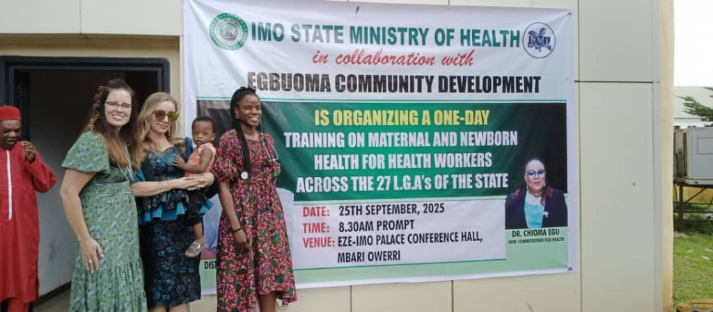
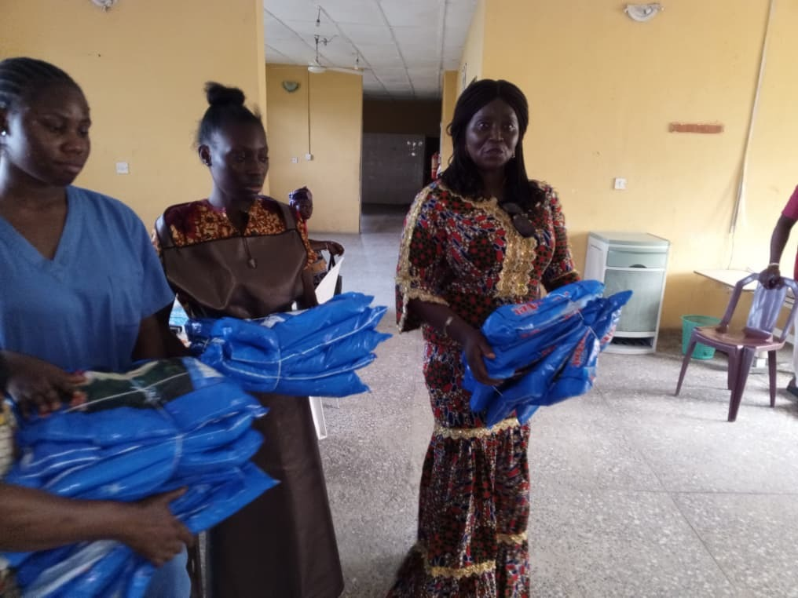
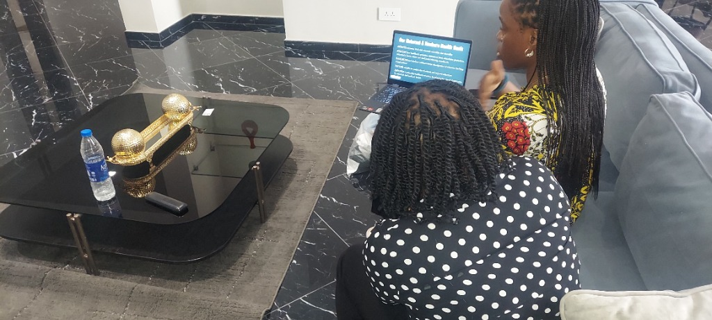
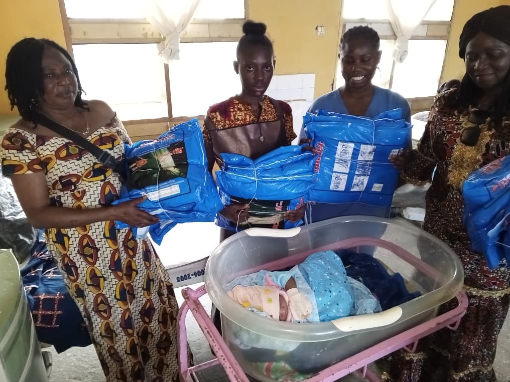
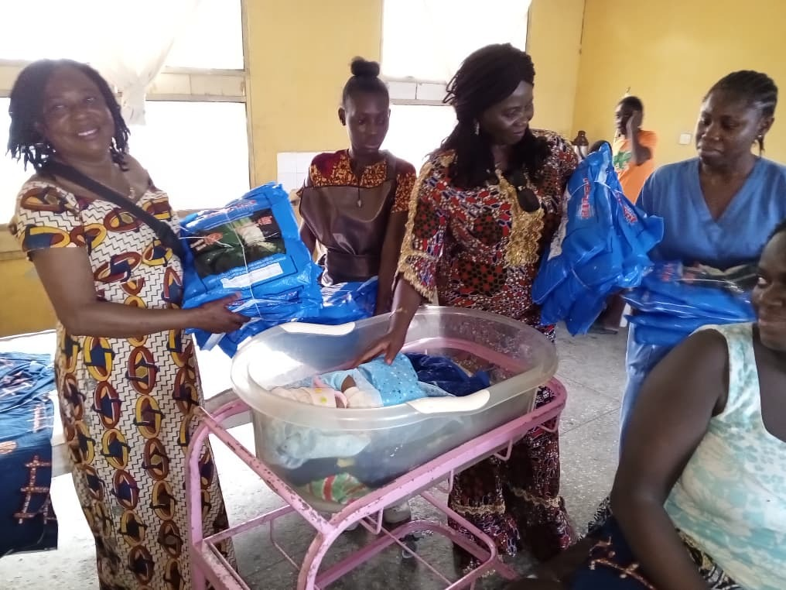
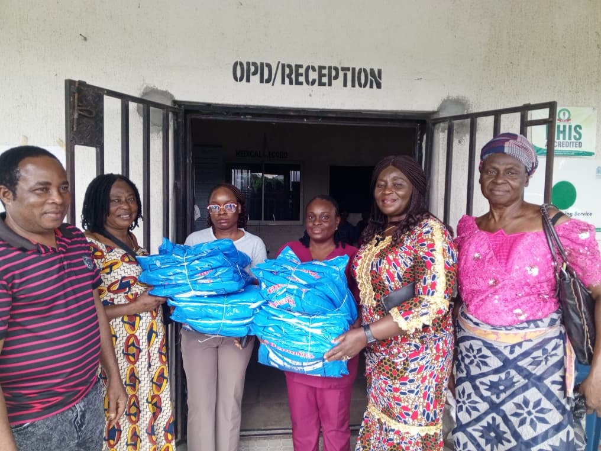
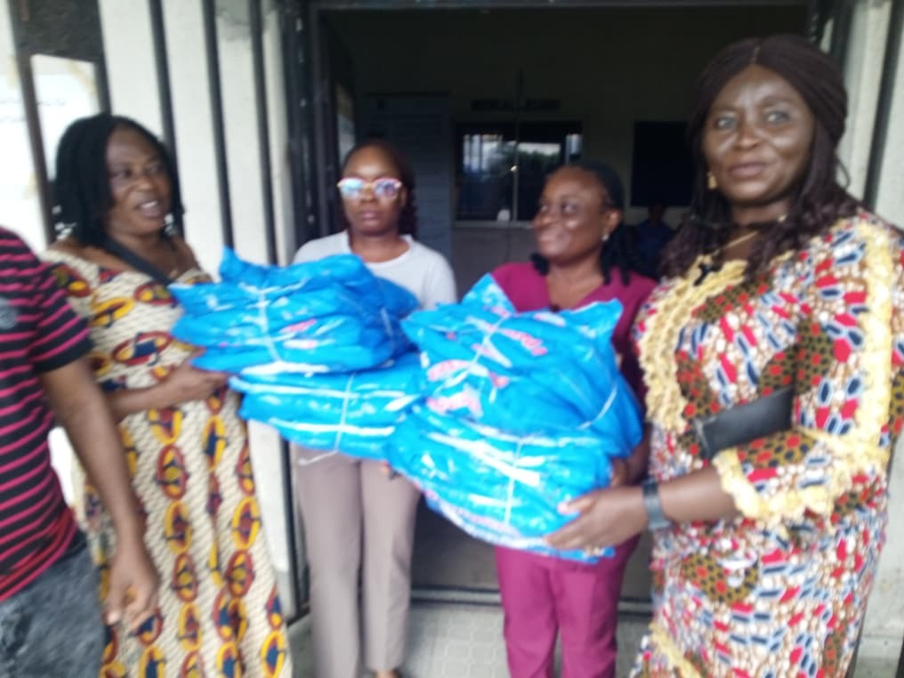
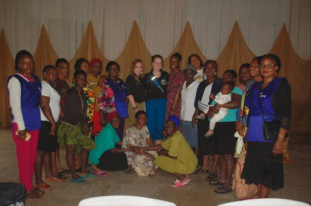
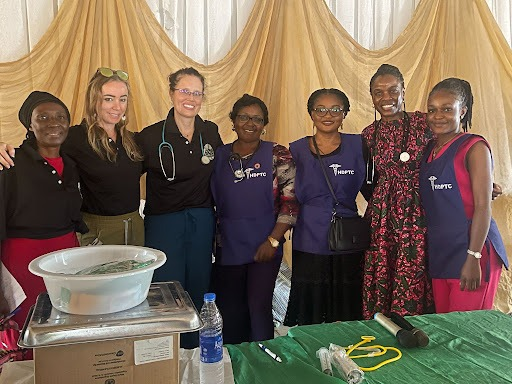
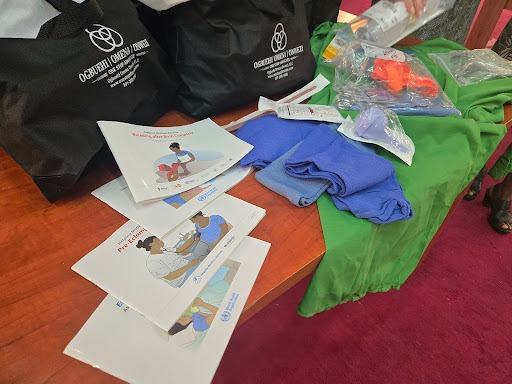

Our Impact
Tangible results for mothers and children in need.
Egbuoma Community Outreach
In partnership with ECD Health we completed a 3-day training session in Imo State Nigeria. During this session we provided vital health education to community healthcare workers and Imo Statewide nurses on the management of postpartum hemorrhage, preeclampsia in pregnancy, essential care of the newborn and neonatal resuscitation. We also provide vital medical equipment to those in attendance.
View Impact Gallery
Nembe Hospital Outreach
Our team successfully connected with the healthcare staff at Nembe Cottage and the Main Hospital to assess needs and provide immediate support.
- Meeting with nursing staff
- Donation of mosquito nets to both facilities
- Community engagement
Our Maternal & Newborn Health Goals
- IMPROVE maternal, fetal, and neonatal morbidity and mortality.
- EDUCATE local healthcare providers (midwives, birth attendants, physicians, community health workers, and traditional birthing attendants).
- INTRODUCE and reinforce evidence-based management of common birthing complications.
- PROVIDE supplies to perpetuate education and improve outcomes.
- EMPOWER community healthcare workers to be lifelong learners and advocates for maternal and newborn health.
Our Gallery
Capturing the moments that matter.









Educational Initiative
A focused educational initiative designed to "Train the Trainer" by equipping community health care workers with essential education aimed at enhancing outcomes in critical areas.
Focus Areas:
- Postpartum hemorrhage (excessive bleeding following childbirth)
- Maternal hypertension (elevated blood pressure associated with parturition, including preeclampsia and eclampsia)
- Essential Newborn care (comprising newborn resuscitation)